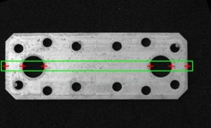

|
类型 |
区域测量 |
|
描述 |
使用矩形、旋转矩形或圆环测量器，测量点，即灰度投影中符合阈值、极性和位置的点，即检测测量区域中满足条件的一个点，测量区域的外接矩不能超出被测图像边界外 |
|
语法 |
ZV_MrPos(mr,img,matPts,filterSize,thresh,polar,select)
参数： mr：ZVOBJECT类型，单区域测量器 img：ZVOBJECT类型，测量的目标图像，单通道图像 matPts：ZVOBJECT类型，矩阵类型，检测到的点，n行3列，依次为x坐标、y坐标和该点的阈值 filterSize：滤波器尺寸,范围[1,201]，取奇数值，常用值3,5,7，若取的偶数内部会自动转换成最近的奇数 thresh：阈值,范围[0,255]，为0则取默认值100 polar：边缘极性：0-白到黑、1-黑到白、2-所有 selec：边缘位置：0-第一点、1-最后点、2-最强点、3-所有点 |
|
适用控制器 |
支持ZV功能或者5系列以上的控制器 |
|
例子 |
 ZVOBJECT img,mr,pts_mat ZV_ImgRead(img,"measure1.jpg",0) '以原图像格式读取图片 ZV_MrGenRect(mr,4,255,644,34) '生成矩形测量器 ZV_MrPos(mr,img,pts_mat,3,80,2,3) '测量目标图像，检测相关参数设置的点
' 绘制结果 ZVOBJECT img_color ZV_MatInfo(pts_mat, 0) ZV_ImpGrayToRgb(img,img_color) '灰度图转化为RGB图像 ZV_DraRect(img_color,4,255,644,34,ZV_DraColor(0,255,0)) '绘制测量区域
FOR i = 0 TO TABLE(0)-1 ZV_MatGetRow(pts_mat,i,3,10) ZV_DraMarker(img_color,TABLE(10),TABLE(11),0,20,ZV_DraColor(255,0,0)) '绘制十字 NEXT |